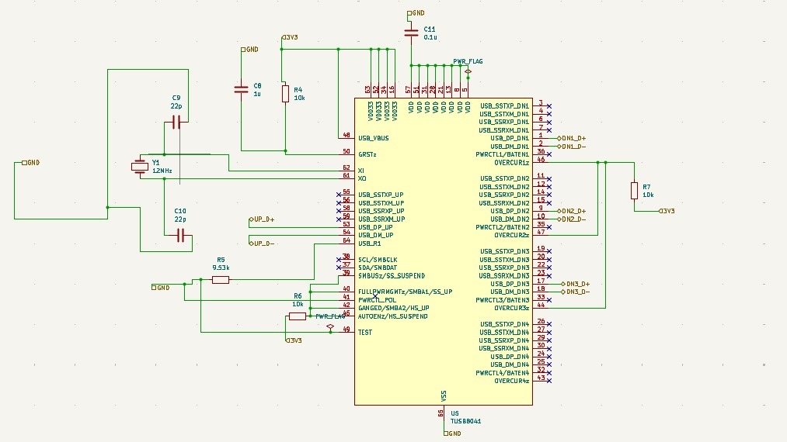

USB 3.0/2.0 Hub Management IC
Function: USB hub controller for multi-port USB expansion
Purpose: Manages USB data communication and port enumeration for multiple downstream devices
IC Type: USB 3.0/2.0 compatible hub controller

Figure 1: USB hub controller circuit with crystal, configuration, and USB connections
| Parameter | Specification |
|---|---|
| USB Standard | USB 3.0 / USB 2.0 backward compatible |
| Number of Ports | 4-7 downstream ports (configurable) |
| Data Rate | 5 Gbps (USB 3.0), 480 Mbps (USB 2.0) |
| Power Per Port | Up to 1.5A per port (with proper power management) |
| Crystal Frequency | 12 MHz or 24 MHz (typical) |
| Supply Voltage | 3.3V (logic), 1.2V (core - internal regulator) |
| Operating Temperature | -40°C to +85°C |
USB 3.0 SuperSpeed support with 5 Gbps bandwidth
Full USB 2.0 and USB 1.1 device support
Individual port power control and overcurrent detection
4-7 configurable downstream USB ports
Overcurrent protection on each port
EEPROM or pin-strap configuration options
Upstream Port (Host Connection):
Downstream Ports (Device Connection):
Input Connections:
Output Connections: